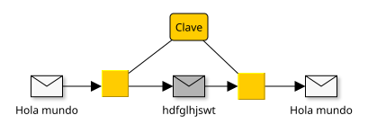
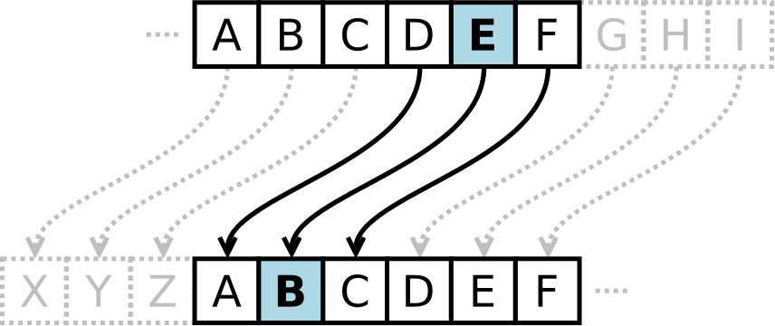
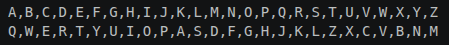
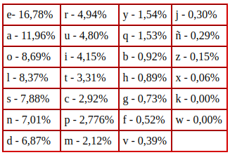
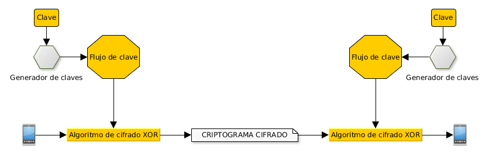

Cifrado simétrico
Mikel Egaña Aranguren
mikel-egana-aranguren.github.io

Mikel Egaña Aranguren
Mikel Egaña Aranguren
mikel-egana-aranguren.github.io
https://doi.org/10.5281/zenodo.4302267
https://github.com/mikel-egana-aranguren/EHU-SGSSI-01

Clave privada (simétricos), clave pública (asimétricos)
Monoalfabéticos, polialfabéticos
Transposición, sustitución, bloques, stream
Confidencialidad, integridad, autenticación, no repudio

Algoritmo de cifrado muy antiguo
Sustitución monoalfabética
Desplazar cada letra del mensaje un número fijo de posiciones en el alfabeto: N=3, A->C

Encontrar la clave de cifrado sin conocerla: descifrar texto cifrados
Encontrar debilidades en el algoritmo de cifrado para descifrar el texto cifrado sin la clave
Probar todas las claves posibles hasta encontrar un texto descifrado con sentido
Hay que conocer el algoritmo de cifrado y el espacio de claves (¿Espacio de claves César? -Laboratorio-)
Coste computacional elevado (¿Computación cuántica?)
Reducir el espacio de claves haciendo algunas claves más probables
Se sustituye cada letra del mensaje original por otra letra de un alfabeto reordenado

Simétrico, Monoalfabético, Sustitución, Confidencialidad
¿Espacio de claves?
Reducir el espacio de claves haciendo algunas claves más probables: ataque estadístico mediante análisis de frecuencias
Monoalfabético: un carácter "original" siempre se sustituye por el mismo carácter/es
Se sabe cuáles son los caracteres más frecuentes en cada idioma
Se sabe las palabras de dos/tres/cuatro caracteres (bigramas, trigramas y tetragramas) más frecuentes en cada idioma
Se va "probando" y deduciendo
Cuanto más largo es el texto cifrado, mejor
Hay que saber el idioma del texto original
Porcentaje de aparición de caracteres en castellano

¿Cómo dificultar el ataque por análisis de frecuencias?
Evitar la correspondencia 1-1 usando el mismo carácter en más de una ocasión (Sistemas polialfabéticos)
Simetrico, ...polialfabetico bloques
Espacio de claves: 25!
Analisis de frecuencias sobre bigramas
Cifrado en flujo: cifrar un flujo continuo de bits
Cifrado en bloque: dividir el mensaje en bloques del mismo tamaño y aplicar el algoritmo a cada uno
Primer sistema polialfabético
Dos discos concéntricos, el interior móvil
Durante el cifrado, se va moviendo, por lo que en el cifrado se usan X alfabetos (correspondencias) distintas
La clave es la posición inicial, cada cuántos caracteres se gira el disco, cuánto se gira y en qué dirección
Es probablemente el elemento criptográfico más conocido de la historia
Originalmente diseñada para uso civil
Modificada para uso militar y usada por los nazis
El matemático polaco Marian Rejewski estableció las bases para desencriptar Enigma
El equipo de Alan Turing partió de esta información para crear su propia "bomba" más eficiente y resistente a cambios de configuración
Criptoanálisis
En vez de cifrar un mensaje, cifran bit a bit
Usado para comunicaciones en tiempo real (No se puede esperar a tener el mensaje completo para cifrarlo y transmitirlo)
A partir de la clave, se usa un generador "pseudoaleatorio" que genera el flujo de clave
La operación XOR entre el bit a cifrar y el flujo de clave, genera el criptograma

Realiza el cifrado XOR entre el texto y una clave aleatoria de la misma longitud
El generador es realmente aleatorio
La clave (el flujo de clave) es lo denominado "libreta de un solo uso":
No es práctico
Basados en el método de Vernam
Usar claves pseudoaleatorias generadas a partir de una semilla y un algoritmo de generación
Con la semilla y el algoritmo de generación se podría reconstruir la clave pseudoaleatoria (Depende del número de posibles semillas distintas)
No son matemáticamente irrompibles
Ejemplos:
Partir el mensaje original en bloques de tamaño fijo:
Cada bloque de mensaje original genera un bloque de mensaje cifrado
Se pueden añadir iteraciones, permutaciones y operaciones entre los distintos bloques
{kind=link}